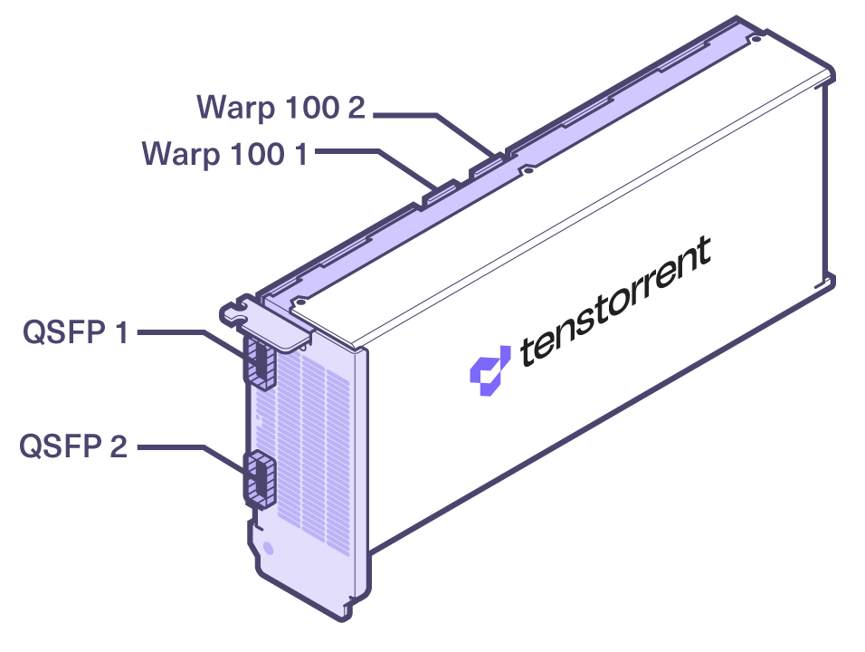
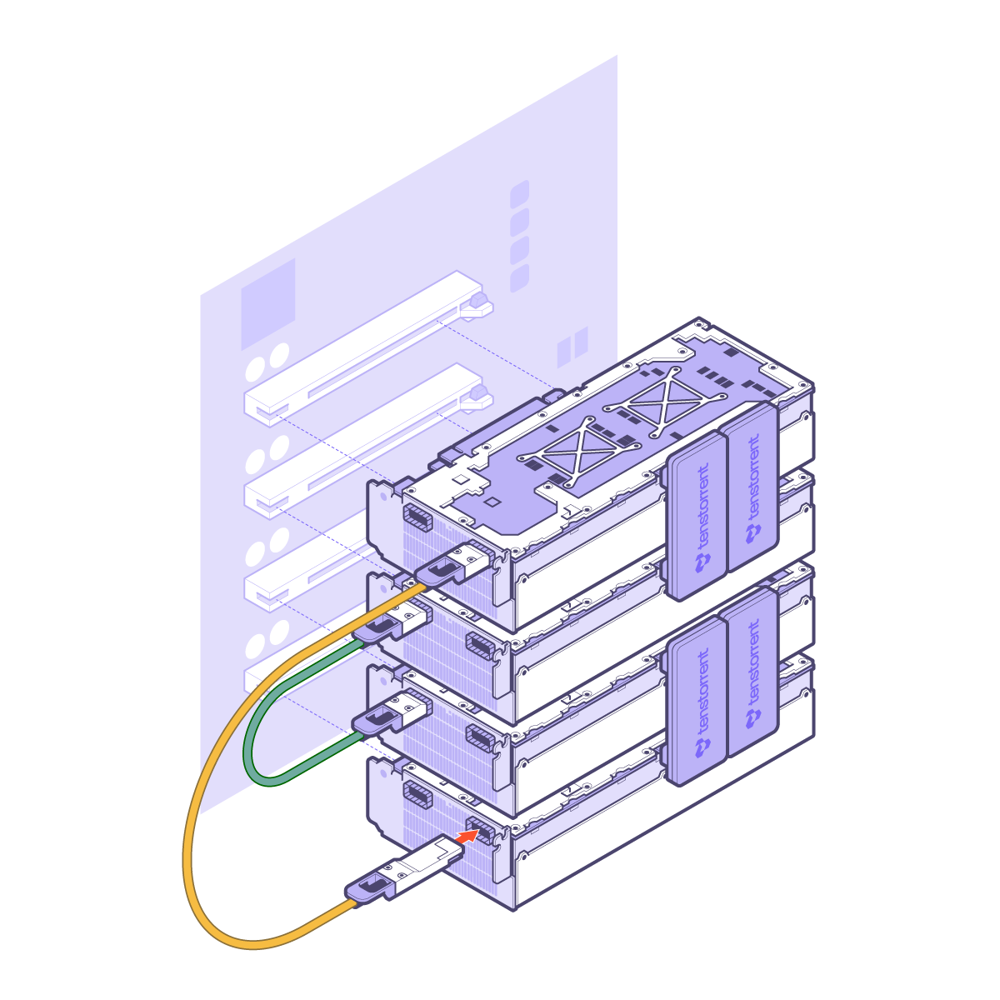

Specifications, Requirements, and Setup
Package Contents
The Tenstorrent TT-QuietBox Liquid-Cooled Desktop Workstation system package includes:
Tenstorrent TT-QuietBox Liquid-Cooled Desktop Workstation
C13 Power Cable, 1.8m/6ft.
2x QSFP-DD 400GbE Cable, 0.6m/2ft.
System Specifications
Specification |
TT-QuietBox (TW-04001) |
|---|---|
CPU |
AMD EPYC™ 8124P |
Motherboard |
TYAN Tomcat HX S8040 MB (S8040GM2NE-2T) |
Memory |
512GB (8x64GB) |
Storage |
3.8TB U.2 NVMe PCIe 4.0 x4 |
Tensix Processors |
4x Tenstorrent Wormhole™ n300 Tensix Processor |
Cables |
2x Warp 100 Interconnect |
Connectivity |
2x RJ45 10GBase-T via Intel® X710 |
Power Supply |
1650W 80 PLUS Platinum |
Operating System |
None |
Operating System Requirements
The TT-QuietBox system ships without an operating system installed. We recommend installing Ubuntu 20.04 (Focal Fossa) to properly use the Tenstorrent n300 Tensix Processors.
QSFP-DD Connections and System Topology
The Tenstorrent TT-QuietBox includes four Wormhole™ n300 Tensix Processors and internal Warp 100 bridges and external QSFP-DD cables that enable the Tensix Processor mesh.

The TT-QuietBox ships with the Warp 100 bridges connected, but the two QSFP-DD cables will need to be connected. This diagram displays the system topology and how the cards are enumerated, along with where the Warp 100 bridges are connected and where the included QSFP-DD cables need to be connected.

One QSFP-DD cable will need to be connected to Port 1 on the cards in Slots 1 and 4.
One QSFP-DD cable will need to be connected to Port 2 on the cards in Slots 3 and 2.
Environment Specifications
The TT-QuietBox Liquid-Cooled Desktop Workstation is designed to operate at up to 35°C/95°F external ambient temperatures.